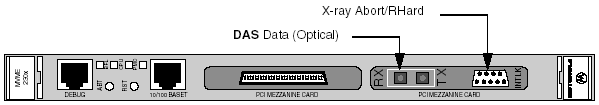

Operating Documentation
Direction 5114045-800, Rev# 10
LightSpeed 4.X Service Information (Advanced)
Operating Documentation |
There are no jumpers, switches or pots that either the customer or service will operate.
There is one LED on the DIP. It illuminates when the PCI Bus is activating the FRAME signal. This signal is active on all PCI cycles.
Illustration 1: DIP Board External Cable Connections

For the slip ring interface (DAS Data) and data loopback.
| NOTE: | The optical cable connection is made to the RX port, which is located above the TX port as viewed from the front of the unit. |
Two PMC-compliant 64-pin card edge connectors for the 32-bit PCI interface, as well as VCC and LGND.
The X-ray Abort and RHARD interface is a male, 9-pin Subminiature-D connector that is accessible from the front face of the DIP. Two of the pins are dedicated to the relay contacts for X-ray Abort, two for the RHARD, and two are dedicated to a read of cable status. See table below for pinout.
Table 1: DIP Board’s X-ray Abort and RHard Pinouts
| PIN NUMBER | SIGNAL NAME |
|---|---|
| 1 | ABORT IN |
| 2 | Not connected |
| 3 | ABORT OUT |
| 4 | Not connected |
| 5 | Cable Read OUT |
| 6 | RHARD OUT |
| 7 | Not connected |
| 8 | RHARD IN |
| 9 | Cable Read IN |